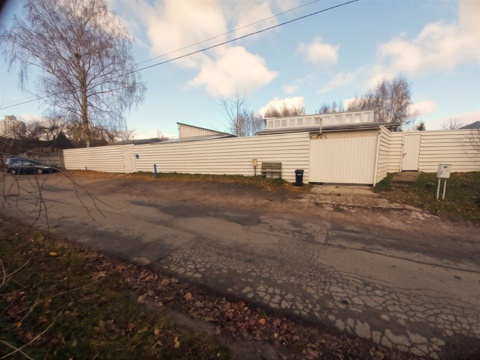
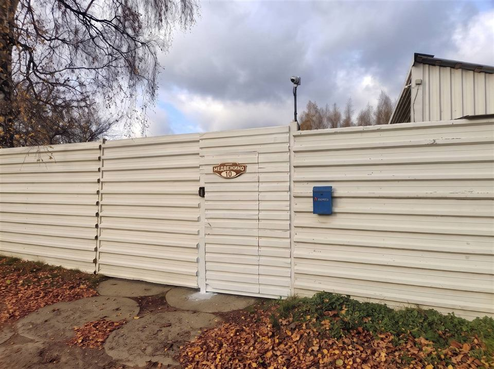
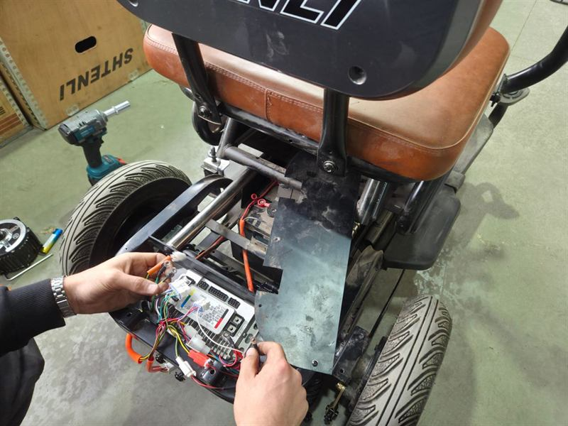
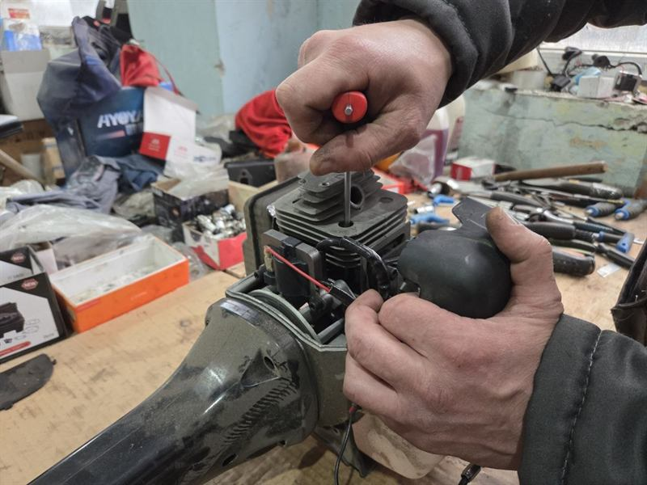
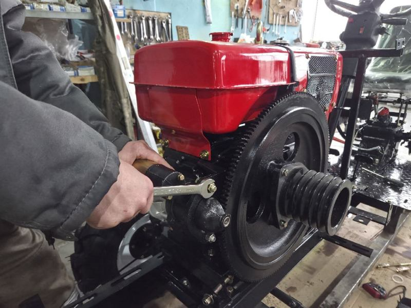
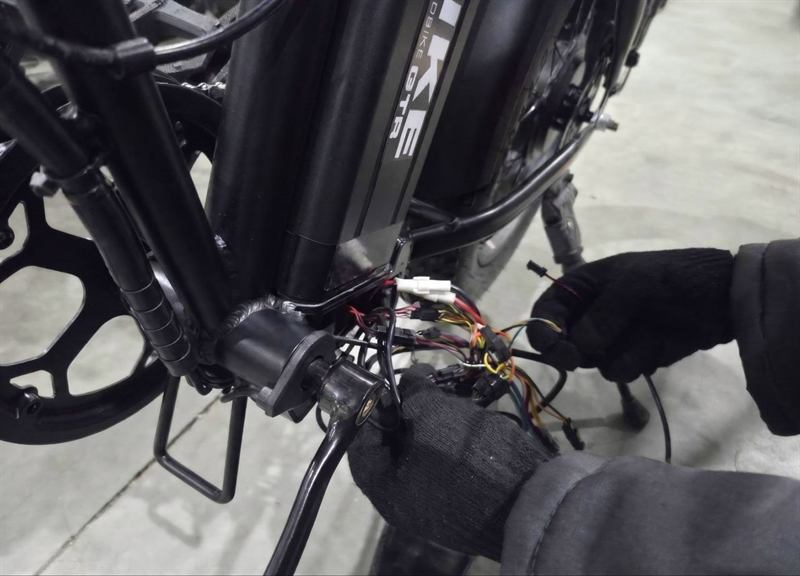
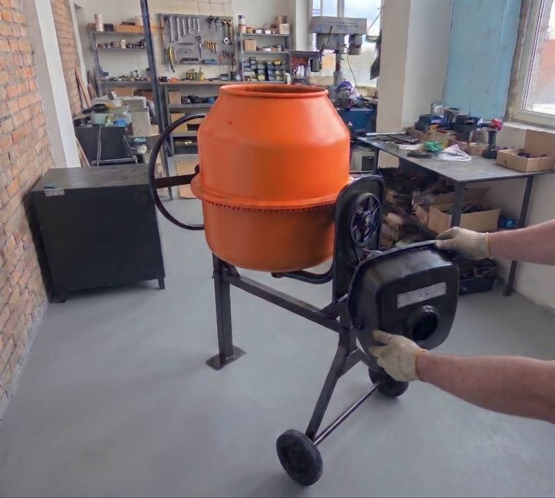
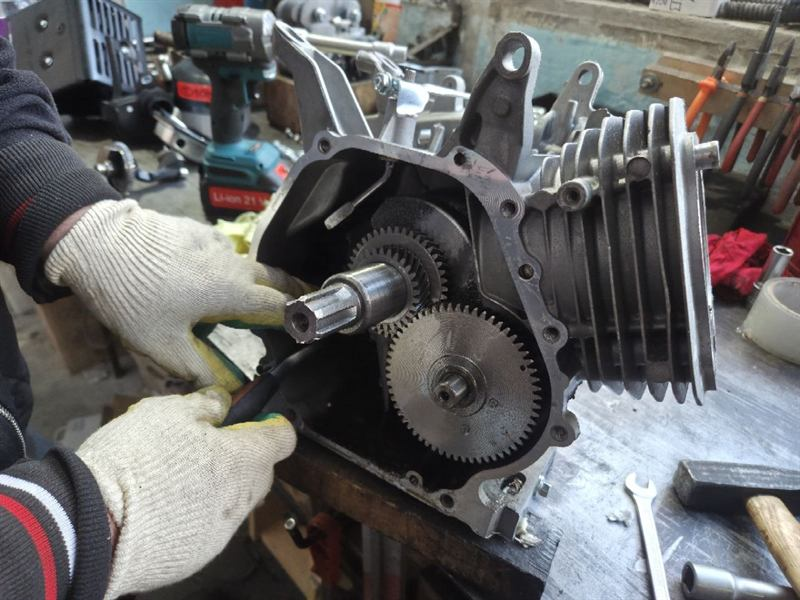

Shtenli и Profi Motors
Мы официальный сервис, поэтому запчасти по этим брендам либо лежат на складе, либо быстро приходят с завода. Привозить ничего с собой не нужно.
Работаем только на оригинальных запчастях.
Единственный официальный сервис брендов в Беларуси. Гарантийный и постгарантийный ремонт, плановое ТО.
Технику мы не продаём — только чиним и обслуживаем.
Бензиновые и дизельные мотоблоки, культиваторы и минитракторы: ТО, двигатель, КПП, редуктор, сцепление, сварка фрез и рамы.
Бензиновые двигатели 152F–192F от 2,5 до 18,5 л. с.: карбюратор, зажигание, клапаны, поршневая группа, коленвал.
Электросамокаты, электровелосипеды, скутеры, трициклы и детские электромобили: аккумуляторы, контроллеры, мотор-колёса, тормоза.
Не заводится, глохнет, теряет мощность: карбюратор, поршневая группа, стартер, редуктор, шина и цепь.
Сетевые и аккумуляторные: электродвигатель и щётки, кнопка, кабель, аккумулятор, цепь, маслонасос, редуктор.
Двигатели Lifan, Loncin и другие, карбюратор, ножи, привод колёс, стартер. Сезонное ТО и подготовка к хранению.
Бензогенераторы: не заводится, нет напряжения, плавают обороты. Двигатель, карбюратор, блок AVR, щётки, стартер.
Поршневые и винтовые: не набирает давление, травит воздух. Кольца, клапаны, прессостат, ТО с заменой масла и фильтров.
Подшипники и валы, венец и ведомая шестерня, электродвигатель, ремни и шкивы, сварка рамы и груши, смазка.
Перфораторы, дрели, шуруповёрты, болгарки, пилы, шлифмашины: щётки и якоря, редукторы, кнопки, аккумуляторы.
Запчасти в наличии и под заказ. Работаем с популярными брендами: Shtenli, Profi, Titan Fermer, Нева, Зубр, Lifan, Storm и другими.
Ещё: Сервисный центр Shtenli · Ремонт садовой техники
Мы официальный сервис, поэтому запчасти по этим брендам либо лежат на складе, либо быстро приходят с завода. Привозить ничего с собой не нужно.
Работаем только на оригинальных запчастях.
Ремонтируем и их. Перед тем как привезти технику, позвоните или напишите мастеру — он скажет, есть ли у нас нужная запчасть.
Если её нет, запчасть можно купить самостоятельно и привезти с собой. Например, свечу зажигания можно заказать на Wildberries или Ozon. Привезёте — поставим, и ремонт пройдёт без заминок.
Выберите свободное время и оставьте заявку.
Приём: пн–пт, 9:00–17:00, слоты по часу.
220018, г. Минск, ул. Медвежино, 10. В здании два входа — нам нужен левый, если стоять лицом к зданию. Дверь со звонком: позвоните, откроем.


Парковаться удобно — место перед воротами. Мастер поможет снять мотоблок с прицепа и закатить его в сервис.

Замена контроллера в трицикле SHTENLI Model A031

Замена поршневой группы у бензокосы Shtenli Demon Black PRO S 2.5 кВт

Замена стартера в двигателе ZS1100NM у минитрактора Shtenli T240

Ремонт проводки у электровелосипеда Fatbike GTR 48V 15A

Замена двигателя у бетономешалки Shtenli PRO 130

Замена масла и ремонт картера двигателя
Срок ремонта зависит от характера поломки и наличия запчастей. Точный срок уточняйте в сервисе.
Только гарантийный талон, в котором записаны модель товара и дата покупки.
Да, лучше записаться: выберите свободное время в онлайн-записи или позвоните по номеру +375 29 685-56-00.
Да. Пришлите фото или видео поломки в Telegram или Viber на номер +375 29 685-56-00. Мастер подскажет возможную причину и ближайшую дату, когда сможем принять технику.
Да. Делаем гарантийный и постгарантийный ремонт, а также плановое техобслуживание техники Shtenli (Штенли) и Profi Motors.
Да, ремонтируем. Перед тем как привезти технику, позвоните или напишите мастеру: он скажет, есть ли у нас нужная запчасть. Если её нет, запчасть можно купить самостоятельно и привезти с собой — мы её поставим.
Отдельно запчасти не продаём. Для ремонта оригинальные запчасти Shtenli и Profi Motors есть на складе или быстро приходят с завода, привозить их с собой не нужно.
Минск, ул. Медвежино, 10, левый вход, дверь со звонком. Пн–Пт с 9:00 до 17:00, суббота и воскресенье — выходные.
220018, г. Минск, ул. Медвежино, 10
вход слева, дверь со звонком
Пн–Пт, 9:00–17:00
Сб, Вс — выходные
ЧСУП «Шкип» — единственный официальный сервисный центр брендов Shtenli (Штенли) и Profi Motors в Беларуси. Делаем гарантийный и постгарантийный ремонт, плановое техобслуживание и работаем только на оригинальных запчастях с завода-изготовителя.
Ремонтируем бензиновые и дизельные мотоблоки Штенли, в том числе популярные модели Shtenli 1900 и 1030, мотокультиваторы, минитракторы и мотоблоки Profi Motors. Меняем стартеры, ремонтируем двигатель, коробку передач, сцепление, редуктор, проводку и фару, ставим колёса и шины.
Чиним электровелосипеды Shtenli, электроскутеры, электросамокаты и электротрициклы: мотор-колесо, контроллер, аккумулятор, тормоза и проводку.
Ремонтируем бензопилы и триммеры, электропилы и электрокосы, газонокосилки, генераторы, компрессоры, бетоносмесители, а также электроинструмент: перфораторы, болгарки, дрели, шуруповёрты, циркулярные пилы и точила. Поможем, если техника не заводится, плавают обороты, компрессор не набирает давление или аккумулятор быстро разряжается.
Для гарантийного ремонта техники Shtenli и Profi Motors нужен только гарантийный талон с моделью товара и датой покупки. Оригинальные запчасти есть на складе или быстро приходят с завода, поэтому покупать их самостоятельно не нужно. Технику других брендов тоже ремонтируем: мастер заранее скажет, есть ли у нас нужная запчасть.
Запишитесь онлайн на удобное время, позвоните по номеру +375 29 685-56-00 или пришлите фото поломки в Telegram или Viber. Сервис находится в Минске на ул. Медвежино, 10, работаем с понедельника по пятницу с 9:00 до 17:00.